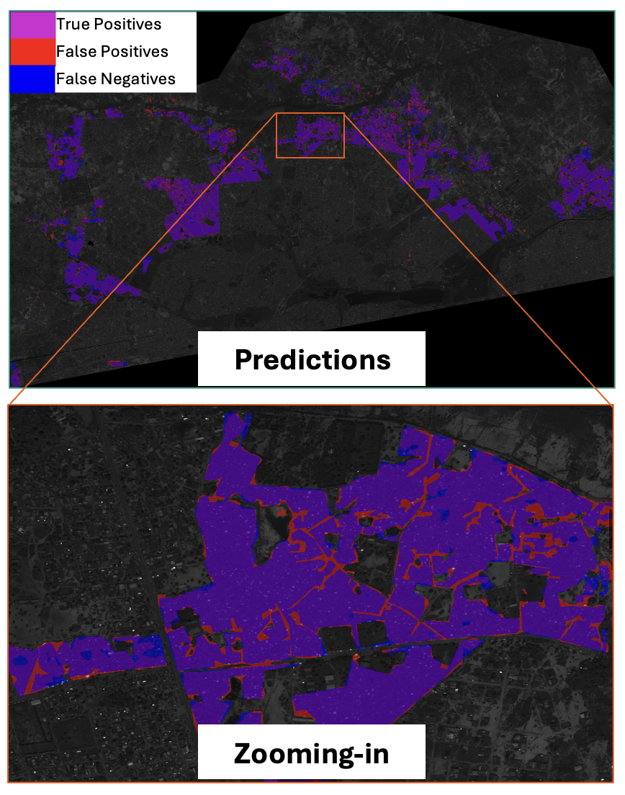
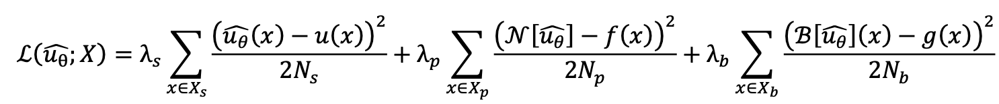
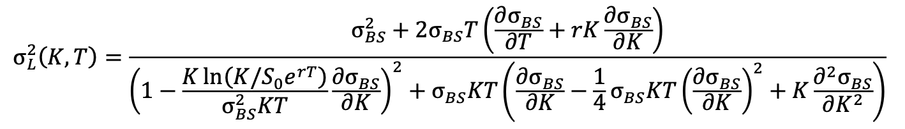
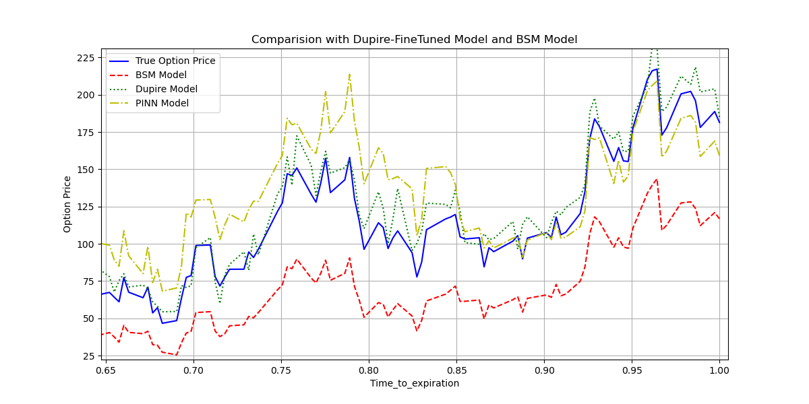

Slum Detection via CNN (MIT Sloan)Github – Led a 5-person RA team in developing attention-augmented UNet pipelines on 100k+ labels, incorporating CRFs, domain adaptation, and data augmentation. Achieved a 25% F1-score uplift via training set optimization. Mentored under MIT Sloan and Cornell GSAS faculty.
Project Details: Slum Detection with Attention U-Net v2
Attention U-Net v2 Architecture Overview
Feature Level 1 Downsample
→
Feature Level 2 Downsample
→
Feature Level 3 Downsample
→
Feature Level 4 Downsample
→
→
→
→
SDI
→
→
→
→
Upsample Feature Level 4
↑
Upsample Feature Level 3
↑
Upsample Feature Level 2
↑
Upsample Feature Level 1
Supervision applied at multiple decoder stages with selective domain adaptation head
The model structure is featured by a Transformer-based encoder and a multi-connection encoder–decoder bridge. Multi-level features extracted by the encoder are refined via the Semantics and Detail Infusion (SDI) module, which integrates high-level semantic information and low-level fine details using spatial–channel attention and a Hadamard product mechanism. Each feature level is enhanced by aligning resolutions across all levels and applying convolutional smoothing before fusion. The decoder reconstructs segmentation maps from the enriched multi-scale features, achieving higher accuracy with efficient FLOPs and GPU memory usage.
Selective Inference Results

Bobo to Ouagadougou – Model Inference Visualization
# Attention mechanism from PVTv2 with Spatial ReductionclassAttention(nn.Module):
def__init__(self, dim, num_heads=8, qkv_bias=False, attn_drop=0., proj_drop=0., sr_ratio=1):
super().__init__()
self.dim = dim
self.num_heads = num_heads
self.scale = (dim // num_heads) ** -0.5
self.sr_ratio = sr_ratio
self.q = nn.Linear(dim, dim, bias=qkv_bias)
self.kv = nn.Linear(dim, dim * 2, bias=qkv_bias)
self.proj = nn.Linear(dim, dim)
if sr_ratio > 1:
self.sr = nn.Conv2d(dim, dim, kernel_size=sr_ratio, stride=sr_ratio)
self.norm = nn.LayerNorm(dim)
defforward(self, x, H, W):
B, N, C = x.shape
q = self.q(x).reshape(B, N, self.num_heads, C // self.num_heads).permute(0, 2, 1, 3)
ifself.sr_ratio > 1:
x_ = self.sr(x.permute(0, 2, 1).reshape(B, C, H, W)).reshape(B, C, -1).permute(0, 2, 1)
kv = self.kv(self.norm(x_)).reshape(B, -1, 2, self.num_heads, C // self.num_heads).permute(2, 0, 3, 1, 4)
else:
kv = self.kv(x).reshape(B, -1, 2, self.num_heads, C // self.num_heads).permute(2, 0, 3, 1, 4)
k, v = kv[0], kv[1]
attn = (q @ k.transpose(-2, -1)) * self.scale
x = (attn.softmax(dim=-1) @ v).transpose(1, 2).reshape(B, N, C)
returnself.proj(x)
SDI (Semantic Distribution & Integration) Module
# Integrates features from different scales.classSDI(nn.Module):
def__init__(self, channel):
super().__init__()
self.convs = nn.ModuleList([nn.Conv2d(channel, channel, 3, 1, 1) for _ inrange(4)])
defforward(self, xs, anchor):
ans = torch.ones_like(anchor)
target_size = anchor.shape[-1]
for i, x inenumerate(xs):
if x.shape[-1] > target_size:
x = F.adaptive_avg_pool2d(x, (target_size, target_size))
elif x.shape[-1] < target_size:
x = F.interpolate(x, size=(target_size, target_size), mode='bilinear')
ans = ans * self.convs[i](x)
return ans
Dupire-PINN Option Pricing (HKU Business School)Github – Developed a Physics-Informed Neural Network (PINN) framework for European SPX option pricing, embedding the Black–Scholes PDE as a physics constraint. Integrated residual connections (ResNet blocks) and adaptive loss-weighting to stabilize training and accelerate convergence. Fine-tuned the trained model with a Dupire local volatility calibration, using RBF-interpolated volatility surfaces to capture skew and smile effects. Achieved a 36% MSE reduction versus BSM and improved stability in volatile regimes, providing a scalable architecture for derivative pricing under local volatility dynamics.
Project Details: Dupire-PINN Option Pricing
Theoretical Framework
This project leverages Physics-Informed Neural Networks (PINNs) to solve the Dupire equation for local volatility. By embedding the Partial Differential Equation (PDE) directly into the loss function, the model learns solutions that are consistent with financial mathematics principles, bypassing the need for traditional grid-based methods.
PINN Loss Function :

The loss function is constructed as the collocation term (first term, validation results & real data point); PDE term (second term, validation results & PDE constraints) and Boundary term (third term, validation results & boundary constraints).
Dupire Equation:

The core of the PINN is a neural network that approximates the option price C(S, K, T). The local volatility sigma=sigma(K, T) is also represented by a separate neural network. The total loss function is a composite of three main terms: Data Loss, PDE Loss (Physics Loss), and Boundary Condition Loss.
Here we presents the inference outcomes of our models on SPX call option data compared with the following models: 1. Pure BSM; 2. Pure PINN; 3. Real Data.

PINN-Dupire Model – Model Inference Visualization
Core Code Implementation
Local Volatility Solver (Crank-Nicolson)
# The solver provides a numerical solution to the PDE, which can be used as a baseline or for comparison.classCrankNicolsonSolver(nn.Module):
def__init__(self, dupire_model, r, q, device='cuda'):
super().__init__()
self.dupire = weakref.ref(dupire_model)
self.r, self.q, self.device = r, q, device
defsolve(self, S0, K, T, M=100, N=100):
# ... grid setup and boundary conditions ...for j inrange(N - 1, -1, -1):
# Construct tridiagonal system and solve with Thomas Algorithm
V[:, 1:-1, j] = self.batch_tdma_solve(...)
return torch.nn.functional.interpolate(V[:, :, 0].unsqueeze(1), size=S0.size(0)).squeeze()
PINN Training Step with Custom Loss
# The train_step function calculates the composite loss for the PINN.deftrain_step(model, X_real_batch, u_real_batch, X_exp_batch, u_exp_batch, r, lambda_params):
model.train()
u_pred = model(X_real_batch)
S, K, T, sigma = X_real_batch[:, 1], X_real_batch[:, 2], X_real_batch[:, 0], X_real_batch[:, 3]
# Get numerical solution from Crank-Nicolson for comparison (BSM loss)with torch.no_grad():
cn_prices = model.dupire.solver.batch_solve(S, K, T)
# Calculate individual loss components
raw_data_loss = F.mse_loss(u_pred, u_real_batch)
raw_bsm_loss = F.mse_loss(torch.tensor(cn_prices), u_pred)
raw_exp_loss = F.mse_loss(model(X_exp_batch), u_exp_batch)
# Dynamically weight the losses and return total_loss
total_loss = (final_lambda[0]*raw_data_loss + final_lambda[1]*raw_bsm_loss + final_lambda[2]*raw_exp_loss)
return total_loss, lambda_params
Financial Sentiment AnalysisGithub – Constructed a full NLP pipeline with custom sentiment scoring for Chinese equity research reports. Automated data scraping (Eastmoney), risk-word filtering, and scoring dictionary optimization for signal extraction.
Kaggle AES Scoring (Silver Medal)Github – Silver Medal: Built hybrid DeBERTa-v3 + GBDT model with handcrafted NLP features and designed a QWK-focused optimizer. Implemented custom penalty weighting and threshold tuning to directly maximize leaderboard metric.
Kaggle DRW Crypto Prediction (Silver Medal, to be updated soon)Kaggle – Silver Medal: Designed crypto price forecasting pipeline with microstructure-aware features (Garman-Klass volatility, order flow, and rolling momentum). Combined lagged regression with multi-horizon modeling. Achieved 0.14 Correlation (market signal) with over 500,000 hourly level data points.
Professional Experience
Huatai-PineBridge Fund, Quantitative Researcher Intern – Engineered high-frequency trading signals for government bond futures using Temporal CNNs, achieving 63% hit ratio. Replaced cross-entropy with focal loss, increasing pixel-level accuracy by 12% and F1-score by 0.14. Developed drawdown-controlled allocation strategies, maintaining Sharpe ratio > 1.5 under Q2 2024 volatility.
Guotai Haitong (Jun'an) Securities, Quantitative Researcher Intern – Designed and backtested 3 factor-based alpha strategies on treasury bond futures, each with Sharpe ratio > 2.0. Built cluster-enhanced residual regression models to forecast fund duration, improving accuracy by 18%. Authored fixed-income hedge report reducing strategy drawdown by 8% (Q4 2022–Q1 2024).
Education
The University of Chicago – M.S. in Financial Mathematics, Expected December 2026
Shanghai University of Finance and Economics – B.S. in Financial Mathematics, June 2025
University of California, Berkeley – Visiting Student in Applied Mathematics, December 2023
Languages & Interests
Mandarin (native), Japanese (basic), Spanish (basic)